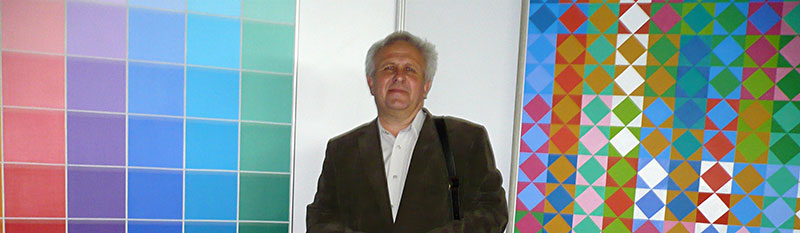
Что такое цвет для художника?
Это то же, что инструмент для музыканта:
Он поёт о земле и небе, о днях и ночах, о своей радости и печали, тоске и тревоге.
Нет более таинственного феномена, чем цвет.
Если реальный мир — это иллюзия, как утверждают адепты буддизма, то цвет — самая иллюзорная из всех иллюзий, поскольку цвет — это всего лишь ощущение, возникающее в органе зрения.
Вместе с тем мы, зрячие существа, не знаем ни одной вещи или явления, которым не был бы присущ какой-нибудь цвет.
Значит, это кому-нибудь нужно?
Цвет изменчив и многолик, как античное божество Протей, он постоянен, как Бытие, множествен и един, как сама Природа.
Вместе с тем он маргинален: в природе это не субстанция, а скорее акциденция.
Большинство живых тварей не различает хроматических цветов: в лучшем случае отличают свет от тьмы.
Василий Кандинский утверждал, что в форме живописи выражено материальное начало мира, а в цвете — его духовное содержание. Скажем немного иначе: содержание произведения искусства, его смысл или идею могут выражать и форма, и композиция, и цвет — на равных правах. Но цвет справляется с задачей выразительности лучше и ярче (в прямом и переносном смысле), чем другие средства изобразительного искусства.
Среди визуальных искусств есть жанры, где нужен только свет, то есть гамма от белого до черного. И есть такая живопись, где художнику, как в детской игре, запрещено «покупать белое и черное» — он работает только хроматическими цветами различной яркости и насыщенности.
Эта живопись называется оп-арт. Художник Олег Мурашка работает в этом стиле, в его «колористическом» направлении.
Его стихия — мир цвета, пространство, насыщенное чистым цветом.
Это направление абстрактной живописи возникло в 50-е годы ХХ-го века в Европе и Америке (США) как реакция на мрачные годы второй мировой войны с её жестокостью, грязью и мерзостью, с её запутанной и темной идеологией. В земной ноосфере возникло желание забыть ужасы войны, очиститься, внести радость в повседневную жизнь, наполнить обитаемое пространство многоцветным светом, игрой сочетаний красок, иллюзиями отражений, преломлений, деформаций. Ведь игра — это традиционный вид отдыха от насущных забот.
Олег Мурашка как будто преданно следует традициям В. Вазарели, И. Альберса и Б.Райли. Но я вижу задачу и смысл его живописи в другом.
В наше время (и в нашей стране) редкий художник способен сотворить себе остров вдали от шума и суеты, докучных забот и тяжелых проблем (хотя в бытовом плане он от них далеко не свободен). Мало теперь таких, кто по-настоящему живет в атмосфере высокой духовности, для кого цвет — это Бог, кто видит и понимает мельчайшие оттенки каждого цвета, слышит аккорды тонов и полутонов, создаёт симфонии тысяч звуков, поющих о жизни в высоких сферах Духа, о жизни, лишенной страдания.
В этом гармоничном мире нет хаоса, он глубоко чужд миру «масскульта», где царит какофония красок телевизионных экранов, глянцевых журналов, рекламных вывесок и газет, где местное радио круглосуточно отравляет воздух ядовитой попсой (которую деятели радио называют «лепшай музыкай»).
Я слышу возражение Зрителя из публики:
— Не Вы ли сказали, что цвет — это маргиналия и иллюзия? В таком случае искусство цвета — не есть ли полный отрыв от реальности,уход в потусторонние мечты? Не опасно ли это для нормального человека?
Ответ Критика:
— Там, где цвет сочетается с хаотической структурой, или ежесекундно изменяется, как в компьютерных видео-узорах, в «цветомузыке» дискотек и тому подобных аттракционах — это действительно пустое зрелище, опасное в больших дозах, подобно наркотикам. Оно действует на психику разрушительно.
Если же цвет сочетается с четким ритмом и геометрической формой — он образует визуальную структуру, гармонирующую с формами и ритмами нашего организма, и в этом физиологическая основа обаяния оп-арта, гарантия его позитивного эстетического воздействия, а проще говоря — красоты.
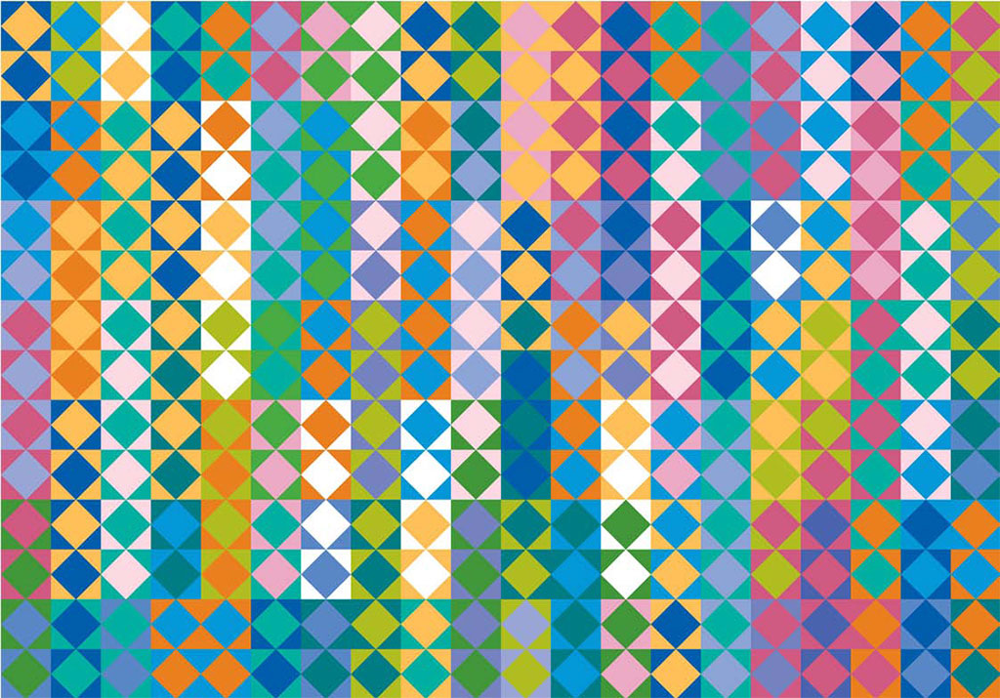
«Весна в Ратомке»
В работах Олега Мурашки линейные ритмы совмещаются с цветовыми — и этим достигнута необходимая мера сложности картины, без которой она могла бы превратиться в изделие декоративно-прикладного искусства. Пример «Радужные рефлексы» (диптих), из серии «Единение». Путешествуя взглядом от левого края картины до правого, мы переходим от светлого туманного утра к теплому яркому полудню и затем к душному влажному вечеру. Вам нехватает эмоций? Здесь вы надышитесь ими в избытке.
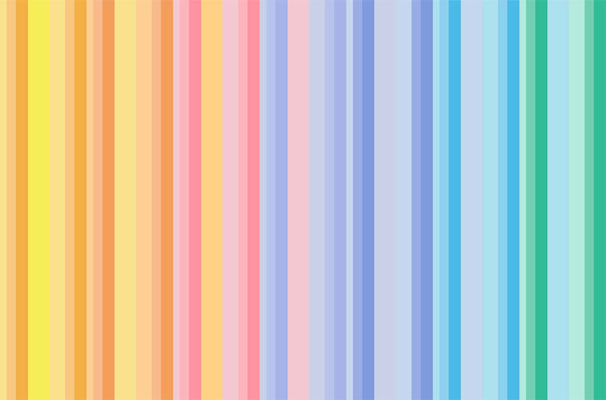
«Радужные рефлексы»
Не чужды живописи оп-арта и динамичные, танцующие ритмы.
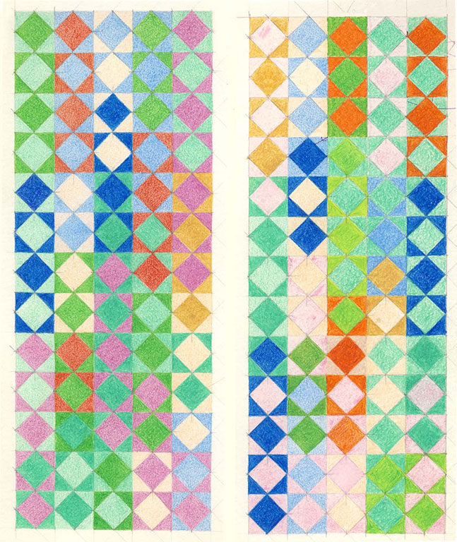
«Радость духа»
Вы можете стоять перед полотном внешне спокойно, но ваша душа проделывает па чарльстона, буги-вуги, фокстрота... Вправо-влево, вперед-назад. Это танец молодых, сильных, организованных; это ритм смеха — столь необходимого для человека сотрясения души и тела.
Есть и другие ритмы на этом вернисаже. Одна из картин названа «Семь. После Л.Н.Мироновой». В этой картине — вся радужная гамма, с чистыми, разбеленными и зачерненными цветами. Всё построено «по науке», логически четко и последовательно. Но в ней, как в каком-нибудь Элизиуме или Валгалле, нет полнокровной жизни. В чем дело? — Думаю, секрет — в предельно идеализированной форме — квадраты, и ничего, кроме квадратов: прямых линий и прямых углов. Ощущается некоторый дефицит движения и свободы.
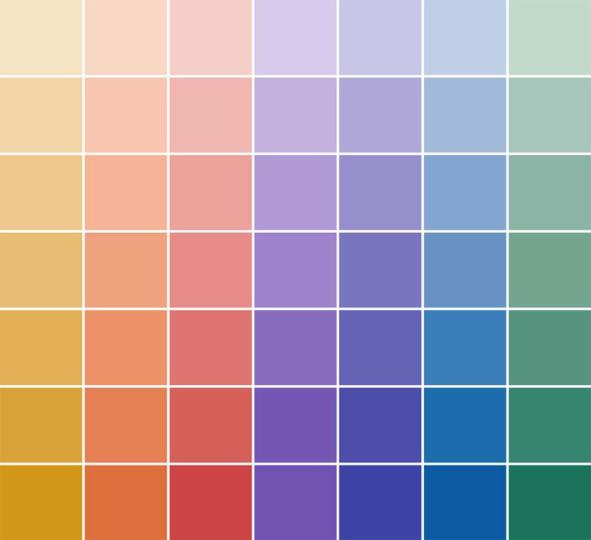
«Семь. После Л.Н.Мироновой»
В других картинах формы цветовых пятен также строгие, ограниченные прямыми линиями и углами двух типов, составляющими в сумме 180?. «Четыре триады», «День прошедший. День наступающий». Динамизм композиции и свобода сочетаний красок в этих картинах не создают ощущения распада или дезорганизации. Ваша душа не почувствует, что пролилась, как вода, и что кости её рассыпались посреди внутренности её (что бывает при рассматривании произведений некоторых чересчур экспрессивных абстракционистов). Нет, здесь вашу душу не сожмут в ком и не столкнут с пьедестала её!
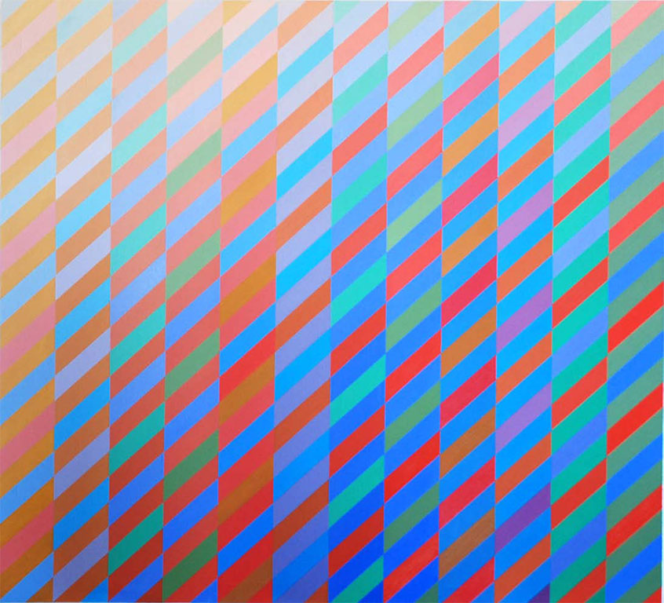
«Три, четыре и двенадцать. Четыре триады»
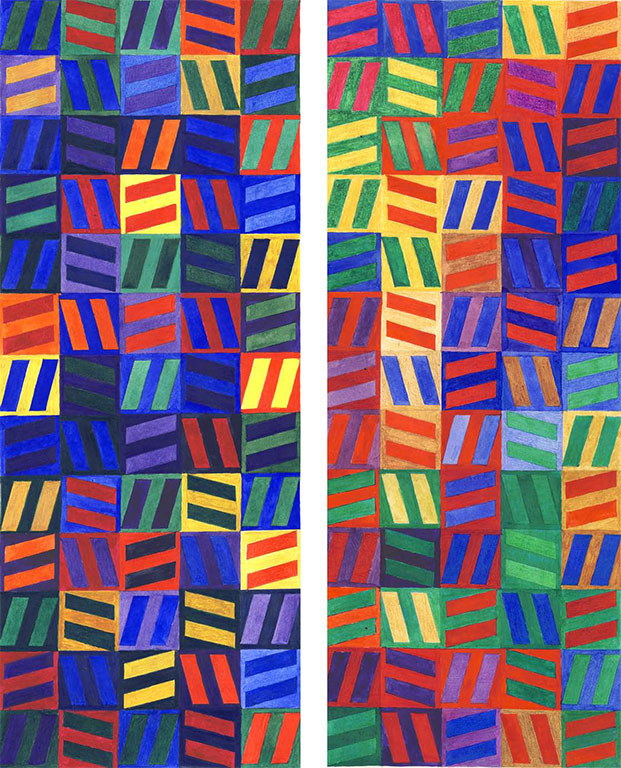
«День прошедший. День наступающий»
Оп-арт причисляют к искусству модернизма. Поскольку модернизм весьма многообразен, в нем можно различить два противоположных направления: классическое и романтическое. Первое отличается ясностью композиции, чувством меры, пропорции, сомасштабности человеку и среде его обитания (пространству). Классическое искусство основано на числе и геометрической форме. Главные числа классически мыслящего художника — пифагорейские: один, два, три, четыре и их производные — семь, десять, двенадцать.
Олег Мурашка верен заветам классики и древнему, но вечно новому учению о числах. Все пятна цвета на его картинах ограничены четырьмя прямыми; все они — прямоугольники или ромбы; их число — 4. Это священное с древности число не потеряло своего значения и в настоящее время. Оглянитесь вокруг, сосчитайте, сколько прямоугольников попало в поле вашего зрения (впрочем, можно провести время более продуктивно). О числе 4 написаны горы книг (кое-что на эту тему можно прочитать на нашем сайте, в разделе «Статьи»).
Что общего между цветом и числом? Теперь все знают, что цвет измеряется числами. Это факт науки и техники. Но знает ли душа, воспринимающая цвет, что есть число, родственное этому цвету или сочетанию цветов? Может быть, и не знает, но чувствует. Конечно, не сознательно, но бессознательно. Будете ли вы спорить, что белый цвет — это Единое, Единица, а черный цвет — Ничто, Ноль? Число спектра белого света традиционно принято как 7 (седмица), хотя физиологи определили его как 120. В картине О. Мурашки «Семь. После Л.Н.Мироновой» автор сам назвал определяющее число. Кроме того, заметим, что композиция картины строится на натуральном ряде целых чисел. Здесь всё ясно, умопостигаемо, поддаётся счету и не вызывает неразрешимых вопросов (если не вдаваться глубоко в основы философии). Для сравнения вспомним картины Асгера Йонса или Захара Кудина, где краски напоминают ряд иррациональных величин.
Они сосуществуют в одной раме подобно множеству неясных и незваных мыслей в голове художника, или подобно смятению чувств в его душе, взволнованной какими-либо переживаниями.
У Олега Мурашки мы находим только покой душам нашим, только порядок и гармонию, необходимые человеку среди житейской суеты.
Особенно очевидно это, когда видим картины Художника в пространстве современного интерьера. Взгляните, как идеально гармонируют они со строгими линиями и красками стен, мебели, лестниц, как настраивают обитателей дома на медитацию, покой и отдых, утешают в мелких тяготах бытия, напоминают о существовании в этом мире красоты, добра, порядка.
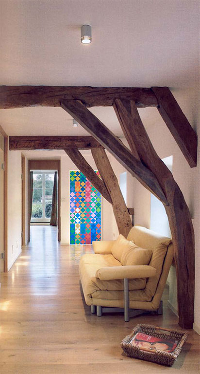
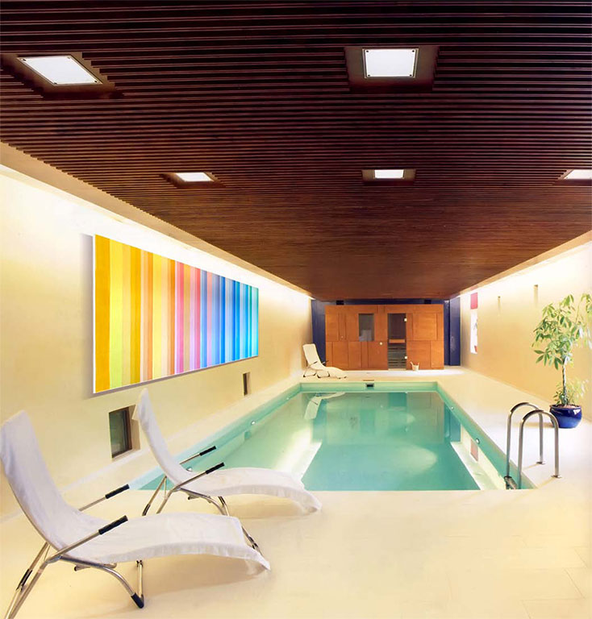
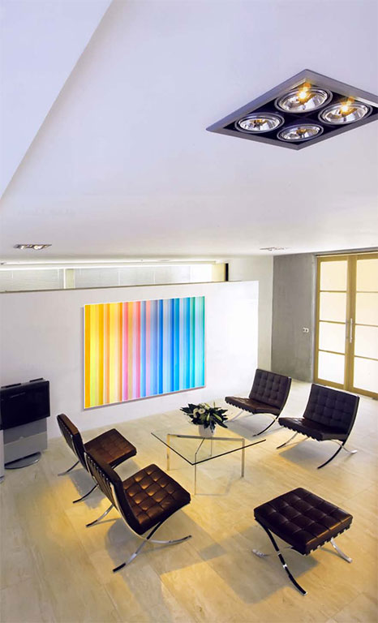
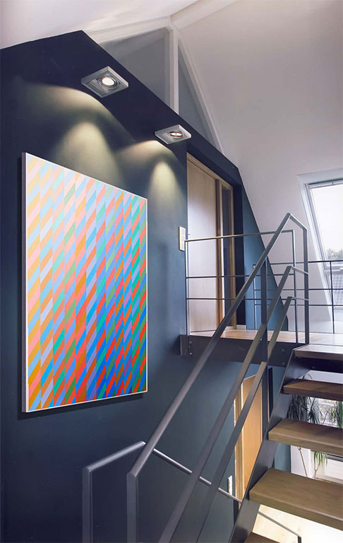
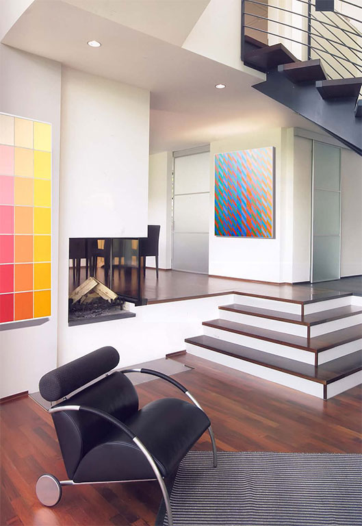
Олег Мурашка — педагог, воспитатель будущих художников. Его мышление органически сочетает синтез и анализ. В работах серии «Единение» колористические идеи воплощены в эскизной форме и различной технике — акварель, карандаш, свободный набросок-штудия. Эти эскизы хранят след руки Художника и отпечатки движения его мысли; они аккумулируют энергию творчества и затем излучают её вовне, позволяя зрителю отчасти проникнуть в лабораторию творца. Такие работы далеко не излишни на выставке или на сайте Художника. К изысканной чистоте картин (холст, масло) они добавляют интимность и душевность, как будто вы видите человека не выступающим со сцены или трибуны, а сидящим с вами за столом «у самовара».
Вот что значит фактура!
Пройдитесь по выставке живописи современных художников молодого и среднего поколения. Много ли вы увидите работ позитивного, жизнеутверждающего характера? Искусство нашего времени почему-то настроено по отношению к жизни сугубо критически.
Олег Мурашка увидел и передал в своем творчестве цветение весны, сияние радуги и радость духа. Это светлое и чистое искусство, оно пробуждает надежду.
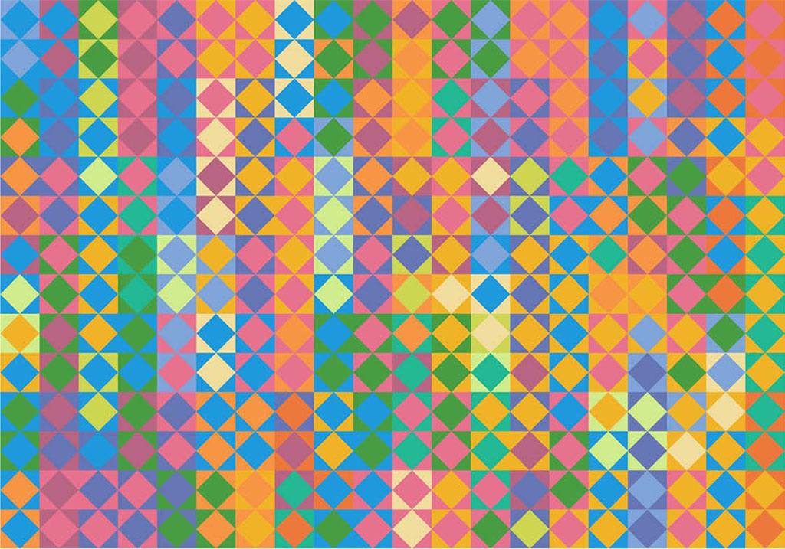
«Виноградник»
Л. Миронова,
10.01.2010